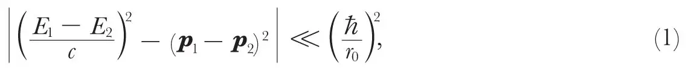
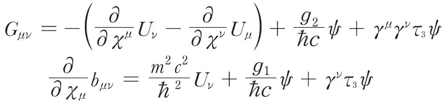

中文
中文H. J. Bhabha
Editor’s Note
By 1939, physicists understood that the framework in which they discussed the behaviour of particles such as electrons and protons was in some sense incomplete. There was particular concern over the particles, called mesotrons, which were intermediate in mass between electrons and protons, but which carried electrical charge. Homi J. Bhabha was an Indian graduate student at Cambridge and Bristol. He was among the first to appreciate the wider implications of mesons. In the 1960s Bhabha returned to India and became the head of the Indian Atomic Energy Commission. He was killed in an air crash in 1966. 中文
IT is well known that the vector theory of the meson1 contains a fundamental length in the interaction of mesons with protons and neutrons determined by the fact that the mass of the meson appears explicitly in the denominator of some of the interaction terms. This circumstance has the result that in those elementary processes in which the momentum change is large compared with mc, m being the mass of the meson, the interaction becomes very large, leading to Heisenberg explosions, and to greater divergences in some second-order effects than is the case in radiation theory. This has led Heitler2 and others to the view that the meson theory in its present form is quite incorrect for meson energies larger than about mc2, and Heisenberg3 to the position that quantum mechanics is competent to deal accurately with only those elementary processes in which the condition4 due to Wataghin,

is satisfied, E and p being the initial and final energy and momenta of a particle concerned in the process, and r0 a fundamental length of the order ћ/mc. The purpose of this note is to bring forward an argument which, it seems to me, shows first that the limitation of quantum mechanics by the condition (1), if true, cannot be based on the explosions as derivable from the theory of the meson, and secondly, to throw some doubt on (1) itself as a limit to the correctness of quantum mechanics. 中文
The argument runs as follows. Let us consider uncharged mesons5 for simplicity, since this changes nothing essential to the argument, and consider the Hamiltonian given in A (49)1. The interaction (58 a) in this contains terms which become very large when the momentum change of the meson becomes large compared to mc in a suitable Lorenz frame. These terms, which lead to explosions, are due as much to the transverse meson waves as to the longitudinal ones, even in the limit when the proton may be considered to be moving non-relativistically. Further, the critical momentum above which explosions begin to appear becomes lower the smaller mc, and becomes vanishingly small when mc→0. 中文
On the other hand, the exact quantized equations of motion for the meson field derivable from this Hamiltonian (A (14) and (15), with the appropriate simplifications for a neutral meson), namely,

go over continuously into the Maxwell equations when m→0. But one knows from electrodynamics that although there are circumstances in which the emission of a large number of quanta may be more probable than the emission of a single quantum, as in the so-called “infra-red catastrophe”, this in no way sets a limit to the accuracy of quantum mechanics and does not interfere with the calculation of less probable processes by the methods of perturbation theory. Moreover, it is just those processes where the emission of a large number of quanta is very probable which can be calculated classically. 中文
In view of the above circumstances, we must conclude that the appearance of the fundamental length determined by the mass of the meson in the interaction term in no way sets a limit to the accuracy of quantum mechanics. For example, in the collision of two protons with energy very large compared to mc2, the probability becomes large for the simultaneous emission of a large number of mesons, which is the analogue of the “infra-red catastrophe” for quanta of finite rest mass, and hence quantum mechanics is none the less competent to deal with it. It can similarly be shown that we can calculate the production of large explosions to a high degree of accuracy by treating the meson field quantities classically, that is, as non-quantized magnitudes, for since mesons satisfy Einstein-Bose statistics, the meson field becomes a classical one just in the case where we are dealing with a large number of mesons. 中文
Hence if a fundamental length r0 exists which limits the applicability of present quantum mechanics to the cases satisfying (1), this length r0 has nothing to do with the mass of the meson or the appearance of explosions. Quantum mechanics in its present form cannot be strictly valid since it leads to divergent results connected with the self-energies of point charges; but these limitations are probably due to the fact that it is not the quantization of the correct classical equations for point charges, and not to the existence of a fundamental length r0. These equations have only recently been given by Dirac6 and their quantization has not yet appeared. 中文
Accordingly, we might expect that very fast protons (or neutrons) would produce explosions consisting of mesons of momenta roughly mc, while mesons with energy much larger than the proton rest-energy would not do so, and their scattering by protons would also decrease with increasing energy, in analogy with the Compton effect. 中文
It can be shown that the classical retarded meson field and potentials due to the world line of a classically moving proton or neutron can be written as the sum of two parts. The first part has exactly the form that the corresponding electromagnetic quantities would have for a point charge and point dipole (represented by a six-vector) moving along a classical world line, and does not contain the mass of the meson. The second part has no singularity at any point of space including the world line of the proton, and goes to zero as the mass of the meson m→0. The meson singularities are therefore identical with the electromagnetic singularities, and it is possible to eliminate these to the same degree and in the same way as has been done by Dirac6 for the electromagnetic field of a point charge. 中文
The detailed calculations will be published elsewhere. 中文
(143, 276-277; 1939)
H. J. Bhabha: Gonville and Caius College, Cambridge, Dec. 17.
References:
1. Kemmer, Nature, 141, 116 (1938); Proc. Roy. Soc., A, 166, 127 (1938). Fröhlich, Heitler and Kemmer, Proc. Roy. Soc., A, 166, 154 (1938). Bhabha, Nature, 141, 117 (1938); Proc. Roy. Soc., A, 166, 501 (1938), referred to above as A; Yukawa, Sakata, and Taketani, Proc. Phys. Math. Soc. Japan. 20, 319 (1938). Stueckelberg, Helv. Phys. Acta, 11, 299 (1938).
2. Heitler, Proc. Roy. Soc., A, 166 (1938).
3. Heisenberg, Z. Phys., 110, 251 (1938).
4. Wataghin, Z. Phys., 66, 650 (1931); 73, 126 (1931).
5. Kemmer, Proc. Camb. Phil. Soc., 34, 354 (1938).
6. Dirac, Proc. Roy. Soc., A, 167, 148 (1938). See also Pryce, Proc. Roy, Soc., A, 168, 389 (1938).
* The name “mesotron” has been suggested by Anderson and Nedder-meyer (Nature, 142, 874; 1938) for the new particle found in cosmic radiation with a mass intermediate between that of the electron and proton. It is felt that the “tr” in this word is redundant, since it does not belong to the Greek root “meso” for middle; the “tr” in neutron and electron belong, of course, to the roots “neutr” and “electra”. In these circumstances, it seems better to follow the suggestion of Bohr and to use electron to denote particles of electronic mass independently of their charge, and negaton and positon to differentiate between the sign of the charge. It would therefore be more logical and also shorter to call the new particle a meson instead of a mesotron.